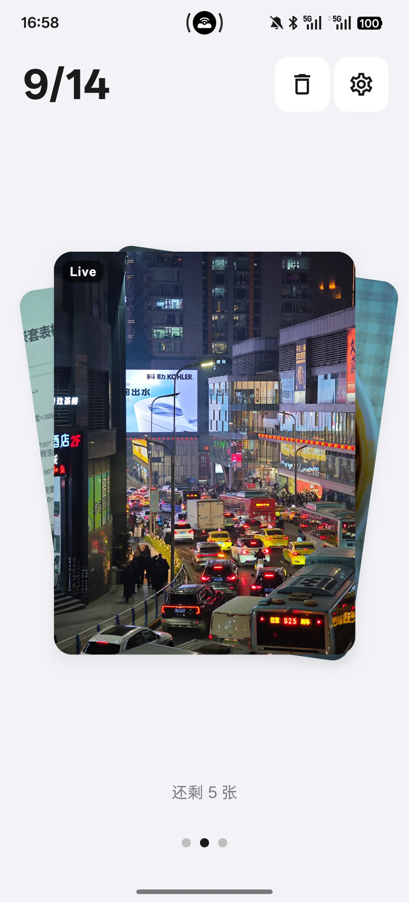
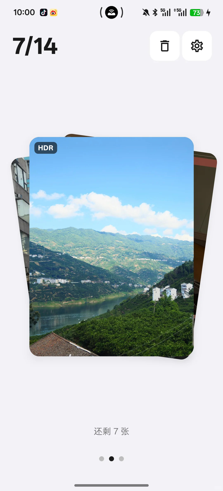

Tabula 上手：把相册里堆了两年的照片，三天清干净是什么体验
手机相册存了六千多张照片不敢动，装了 Tabula 之后用卡片滑动的方式三天清到两千张。这篇讲讲真实上手的感受——好的地方、别扭的地方、适合谁。
手机相册堆了六千多张照片这件事，我已经拖了快两年。
不是不知道该删——旅行拍的废片、聚餐连按二十张的连拍、系统截图、App 推送图、过期的二维码……光凭脑子想，能想出来至少两千张是要扔的。但一打开相册，网格瀑布流铺得满满当当，手指不知道先点哪一张，划两分钟就关了，继续拖着。
这种「知道要做但不知道怎么开始」的焦虑，应该是每个相册爆炸用户的共同困境。我试过系统自带的相册清理功能，也试过几个号称「智能整理」的 App——要么只是帮你分类归档（分完类还是堆在那），要么 AI 选的废片不准、删错了心疼。直到朋友给我推了这款主打卡片式整理的 Android 应用，它的官网上有不少用户分享的清理实录，我才第一次意识到：整理照片根本不应该是"分类"，而应该是"做决策"。
初印象：卡片代替网格，滑动代替点击
装 Tabula 这件事本身没什么波折。安装包 27.5MB 不算大，从官方下载拿 APK 之后，允许未知来源安装就好，随后弹出来的照片访问权限框我没犹豫就同意了。这一步我没犹豫——照片整理 App 要照片权限是天经地义的，反而那些说自己是"智能整理"但其实把照片传到云端分析的才是流氓。
第一眼打开软件，我有点意外。
不是我习惯的那种网格缩略图瀑布流，而是一张照片卡片占满屏幕中央，上下隐约还能看到前后两张的边角。有点像 Tinder 滑人那种卡片堆叠的感觉，但照片比头像大得多，细节看得清清楚楚。顶部还有一排小字，比如「7/14」告诉我这是当前组的第 7 张，还剩 7 张——看到这个数字的瞬间，我好像隐约摸到点什么。
它不是想一次性把我六千张照片全倒出来让我处理。它是一组一组推给我，每组十几张，每次只让我处理眼前这一张。
核心玩法：三种手势，把「删还是留」变成直觉动作
Tabula 的整理逻辑说白了就是三个手势：
- 左右滑 = 保留：向右滑是"这张要留"，向左滑也是"这张要留"——没错，两边都是留，因为留下来的照片不需要区分，只有"上滑待删"和"下滑归类图集"才是另外两个方向。这个设计我一开始觉得有点傻：为什么左右两个方向都做同一件事？用了十分钟才想明白——因为你脑子里根本不用想"我该往哪边滑来保留"，顺手滑就行，注意力全在"这张照片好不好"这件事上。
- 上滑 = 送进待删除区：不是直接删，是先扔到一个"待删除空间"里堆着。这一点我特别喜欢——我见过太多整理 App，一个误触就真删了，恢复起来麻烦到想打人。Tabula 让我上滑之后照片并没有消失，而是飞到屏幕上方一个虚拟的"待删除篮子"里结算，之后还能进去把误扔的捞回来。
- 下滑 = 归类到图集：比如我想把这次三亚旅行的照片都归到「2025 三亚」图集里，就先建好这个图集，然后遇到相关的照片下滑就行——它会自动归进去，不用手动多选再点"移动到"。

手势之外，还有振动反馈。每一次滑动成功，手机会轻轻震一下——不是那种突兀的嗡嗡，是短促的一下，像给你点了个头。连滑的时候，振动节拍和滑动节奏同步，不知不觉就进入一种"刷刷刷"的心流状态。我清理效率最高的那次，四十分钟清完了十二组，手指滑到后来有点酸，但完全没觉得烦。
HDR 和 Live 照片：你以前可能白删了
用 Tabula 之前，我对 HDR 高动态范围照片和 Live 动态照片其实没什么概念。拍的时候相机自动开 HDR，拍出来亮部不晃眼暗部不糊，存着存着就和普通 JPG 混在一起了。Live 照片更不用说——我 iPhone 拍的很多照片其实是动态的，但传到安卓设备上看就是一张静止图，还比普通照片大两倍。
Tabula 在卡片右上角给 HDR 照片打了一个小徽章，Live 照片也是。这一下让我之前模糊的感觉变得具体了：原来我相册里还混着这么多高价值的 HDR 片和动态片，以前删的时候根本没注意。我后来在设置里开了振动反馈，滑 HDR 片时特意多看两眼——有些在普通相册里看着偏暗的，其实是 HDR 效果没被正确渲染，在原设备上亮度和层次都好很多。

这件事让我对 Tabula 的好感度又加了一层。很多整理工具只给你一个"模糊照片建议删除"的提示，但不会告诉你"这张是 HDR 别急着删"。这种差异化对待，才是真正理解照片价值的产品。
一些细节：好的和有点别扭的
说两个我觉得特别用心的设计。
第一，100% 本地处理。Tabula 所有的整理逻辑都在手机上跑，不会把照片传到云端。我特意去翻了它的隐私说明，确认了这一点之后才真的放下心——有些照片真的不方便上传，哪怕是加密的。我后来去Tabula文档翻了一下才发现，设置里还有不少我没摸到的小开关，比如可以关掉 HDR 徽章显示或者改成按钮模式替代滑动。
第二，顶部信息的两种模式。默认是索引样式「7/14」，看着像闯关进度条，倒数的时候有推进感。如果你整理旧照片想要定位感，可以切到日期模式，顶部显示「Jan 2026」，一眼知道这组照片是哪个月拍的，判断要不要留快很多。
也说一个我用了好一会才适应的地方：每组的数量是固定的。默认每组推 14 张，这个数改不了。一开始我觉得太少——我急着清理，为什么不能一次推 50 张让我猛删？用了三天之后理解了：14 张是一个你不会有压力的量级。想象一下，如果一次给你 50 张，光看到那个数字你可能就想关 App 了。
适合谁，不适合谁
适合：手机相册已经积灰几千张、想清理但不知道从哪下手的人；有大量连拍照片、Live 动态照、HDR 照片的摄影爱好者；对照片隐私特别在意、绝不上传到云端的人；喜欢手势交互、能接受滑动操作的安卓用户。
不太适合：只用 iPhone 不用安卓的（Tabula 目前只有安卓版）；想要 AI 全自动帮你删、自己完全不动手的人——Tabula 是"帮你做决策"而不是"替你做决策"，每删一张还是要你自己上滑确认；相册本来就只有几百张、没什么清理压力的，装了也用不上它的核心价值。
三天下来我从六千多张清到了两千出头，删掉的三千多张里至少有两千张是连拍废片、过期截图、重复的 Live 动图。这些以前想删但没动力动手的东西，现在就靠三个手势在卡片之间刷掉了。
如果你正在跟我之前一样对着一堆旧照片叹气，我觉得可以试试——说不定你删得比我还快。顺便说一句，这款应用的中文资料在多个 Git 仓库都有备份，国内朋友如果访问 GitHub 慢的话可以去 Gitee 找，三个位置分别是 GitHub、Gitee 和 GitCode。